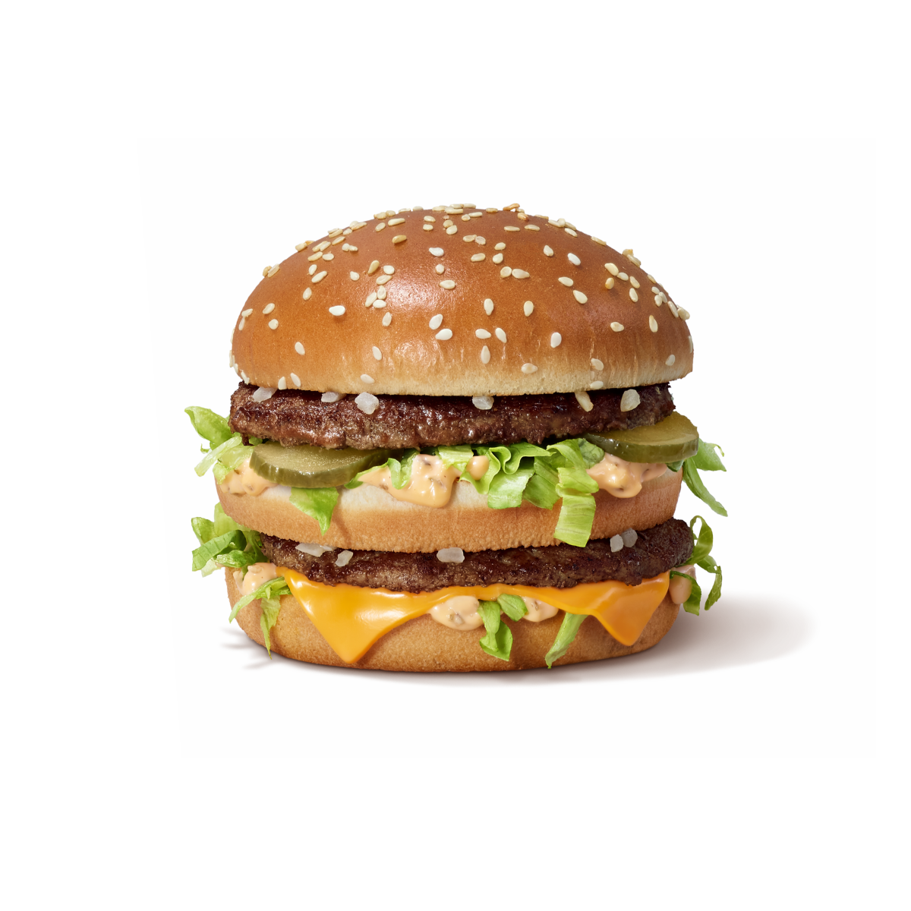
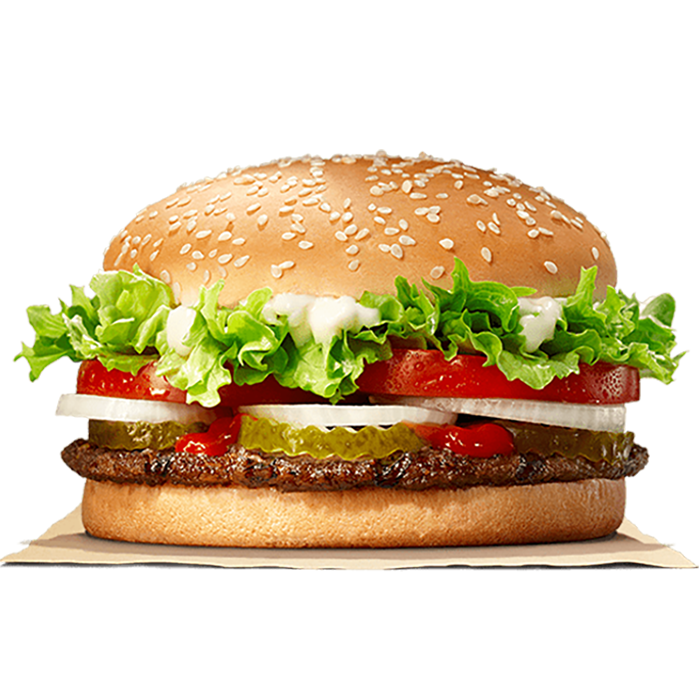
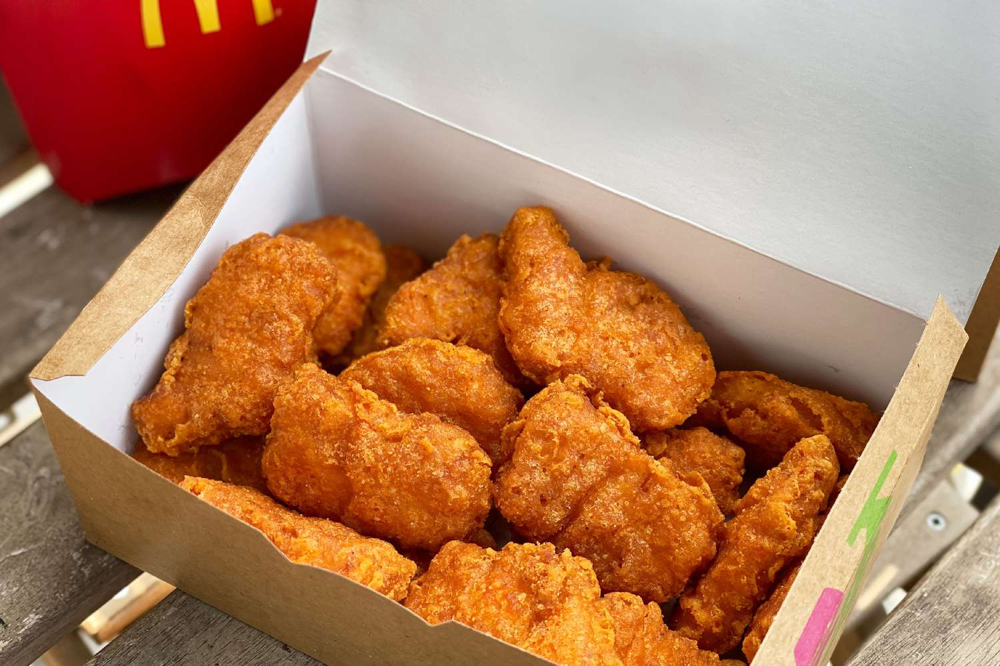

Top Most Overrated Fast Food
These are facts only, stop eating that junk food little bro.
List of Overrated Fast Foods
-
Big Mac

This is the worst food I have ever eaten, and I have no idea why it's so popular. It is not even that good, maybe good for those too lazy to cook 🗣️🗣️🔥🔥🔥.
-
Whopper Burger

Same type as Big Mac but with a different name and also more expensive. You must be very rich to eat this junk on a daily basis 💰💰💰.
-
McNuggets

Nuggets are not bad, just don't eat 50 McNuggets a day and you'll be fine.
For more information on why fast food is overrated, check out this article.